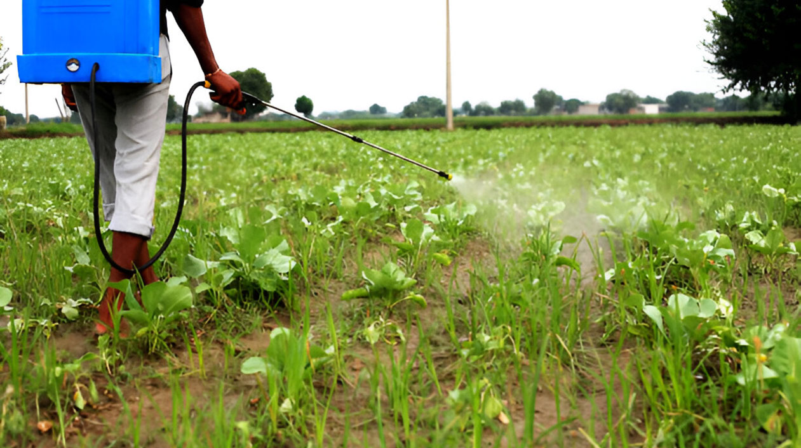

Consuming chemically treated vegetables and fruits can have various harmful effects on health, though the extent often depends on factors like the type and amount of chemicals used, as well as individual health conditions.
Pesticides used in agriculture can leave residues on fruits and vegetables. Over time, the accumulation of certain chemicals in the body could potentially lead to chronic health problems. This is especially concerning for vulnerable populations such as children and pregnant women. Some individuals might experience allergic reactions to chemicals used in the treatment of fruits and vegetables, such as sulfites or preservatives. In some cases, antibiotics are used in agriculture to promote growth and prevent disease in plants and animals. This can contribute to the development of antibiotic-resistant bacteria, which can pose a significant health risk.
Pesticides and other chemicals can affect the balance of gut bacteria, which is crucial for digestive health and immune function.
Cancer: Some pesticides are classified as carcinogens, meaning they can potentially contribute to the development of cancer.
Endocrine Disruption: Certain pesticides can interfere with hormone systems, potentially leading to reproductive issues or developmental problems.
Neurological Effects: Long-term exposure to certain pesticides has been associated with neurological disorders such as Parkinson's disease.
The chemicals used in agriculture can also have broader environmental effects, such as contamination of water supplies and harm to wildlife, which indirectly impacts human health.
Soil: Chemical fertilizers can lead to imbalances in soil nutrients, result in excessive levels of nitrogen, phosphorus, and potassium, potentially disrupting soil health and affecting the growth of plants. Chemicals, particularly pesticides and herbicides, can harm beneficial soil microorganisms. These microbes are crucial for nutrient cycling, soil structure, and overall soil fertility. Disruption of soil microbiota can lead to reduced soil health and productivity. Intensive use of chemicals, combined with practices like monoculture, can degrade soil structure, making it more prone to erosion. This can lead to loss of topsoil and reduced agricultural productivity.
Air: The use of chemical fertilizers and pesticides can contribute to air pollution. Volatile organic compounds (VOCs) from pesticides can be released into the atmosphere, contributing to smog and other air quality issues. Some chemical fertilizers, particularly those containing nitrogen, can contribute to the emission of greenhouse gases such as nitrous oxide, a potent greenhouse gas that contributes to climate change. Pesticide application can release particulate matter into the air, which can affect respiratory health in nearby communities and contribute to air pollution.
Water: Chemicals used in agriculture can leach into groundwater or run off into surface water bodies. This can lead to contamination of drinking water with harmful substances such as nitrates, pesticides, and other residues. Excessive nutrients, particularly nitrogen and phosphorus from fertilizers, can lead to eutrophication of water bodies. This process results in excessive growth of algae and aquatic plants, which can deplete oxygen levels in the water and harm aquatic life. Pesticides can be carried into waterways through runoff, potentially harming aquatic organisms and disrupting ecosystems. Some pesticides are toxic to fish, insects, and other wildlife. Chemicals can affect the health of aquatic ecosystems by disrupting the balance of nutrients and harming species that are sensitive to chemical exposure. This can lead to a loss of biodiversity and disruption of aquatic food chains.
Organic farming methods typically are safer, eating a varied diet can help minimize the risk of exposure to any one particular chemical. The risks associated with chemical treatments in produce are a concern, making informed choices and practicing good food safety can help mitigate potential health impacts. Employing natural inputs and practices that are less harmful to soil, air, and water.
Overall, while chemicals can enhance agricultural productivity, their use needs to be carefully managed to mitigate negative effects on soil, air, and water.